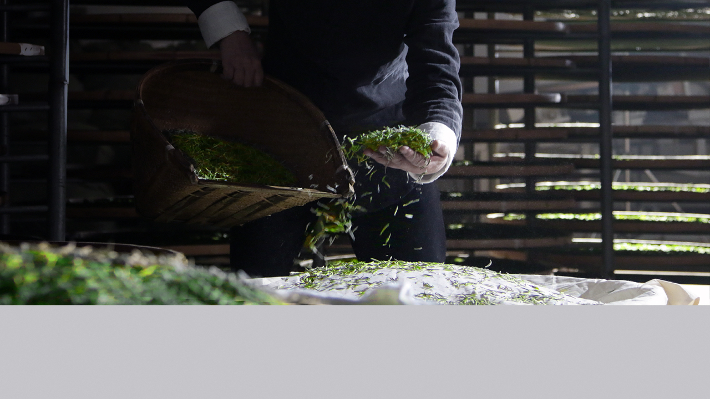
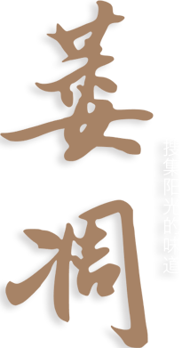

核心工艺
白茶品质的形成主要在萎凋工序。白茶萎凋时间长，萎凋环境条件多变，理化变化复杂。随着萎凋过程的进行，
茶青的外形与内含物都会发生缓慢变化，逐步形成白茶特有的品质。萎凋工艺看似简单，实则天气、
温度、湿度、气流速度等都会极大地影响品质，顶级的白茶制作师傅，会灵活根据环境变化，对工艺进行调整。
福鼎白茶
非物质文化遗产项目
福鼎白茶制作技艺传承人
国家茶叶标准技术委员会委员
白茶品质的形成主要在萎凋工序。白茶萎凋时间长，萎凋环境条件多变，理化变化复杂。随着萎凋过程的进行，
茶青的外形与内含物都会发生缓慢变化，逐步形成白茶特有的品质。萎凋工艺看似简单，实则天气、
温度、湿度、气流速度等都会极大地影响品质，顶级的白茶制作师傅，会灵活根据环境变化，对工艺进行调整。
“白茶制作看似简单实则很难，
要看天晒青和看青晒青，
根据天气情况准确判断什么时候晒、晒到什么程度。
没有太阳不行，太阳大了也不行，
制茶师必须根据天气和茶青的变化，
灵活调整茶青的萎凋工艺，把握这种微妙的感觉，
必须靠经验和勤奋，绝非一朝一夕能够练成。”